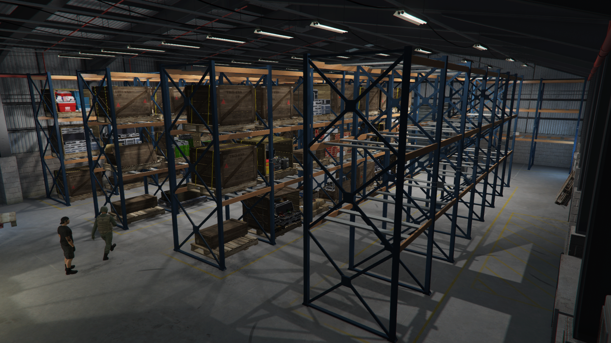
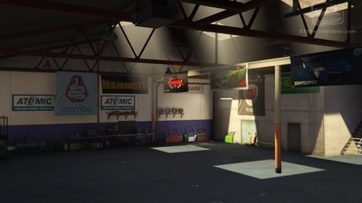

Our President works tirelessly day in and day out with several legitimate business in order to provide the funds necessary for our organization to continue to grow. These businesses are in partnerships with some of the most prestigious entrepreneurs in the region.

Precious Cargo: The cargo that we source and store are from some of the most richest and exotic places around the globe. Everything ranging from precious jewels, exotic materials, rare vehicles, etc, all stored within the saftey of our highly secured warehouses where we process the cargo then redistribute for higher profit.

Used Vehicle Lot: Although the vehicles we have for sell are previously used or owned, they are still some of the most exotic super cars you will find on the streets. Whether you are looking for drive way eye candy, a cruise downtown, or a car to smoke your rivals on the underground racing circut, Synthetic Automobiles is the place to go. Salesman are also sought after in this business so if you have experiance and a vaild drivers license, please see the Contact section of this website.